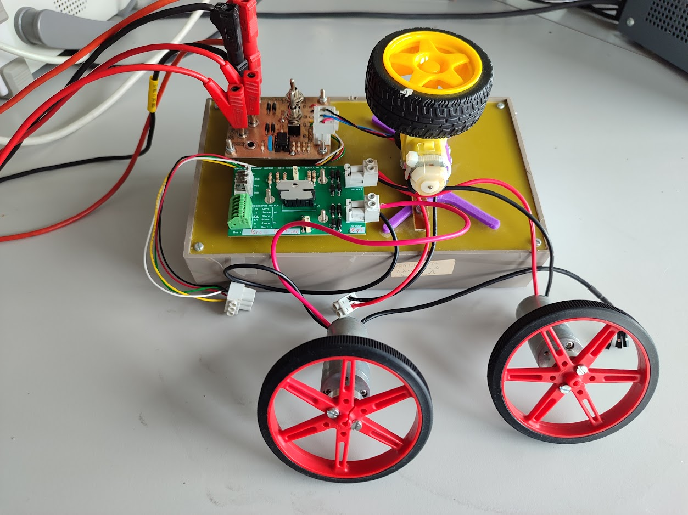
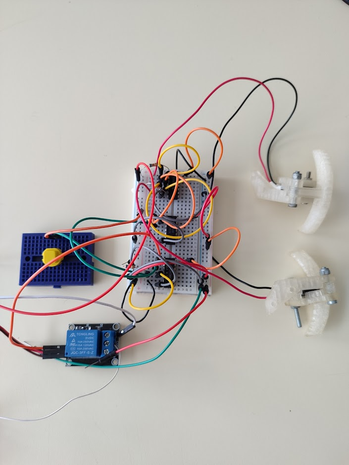
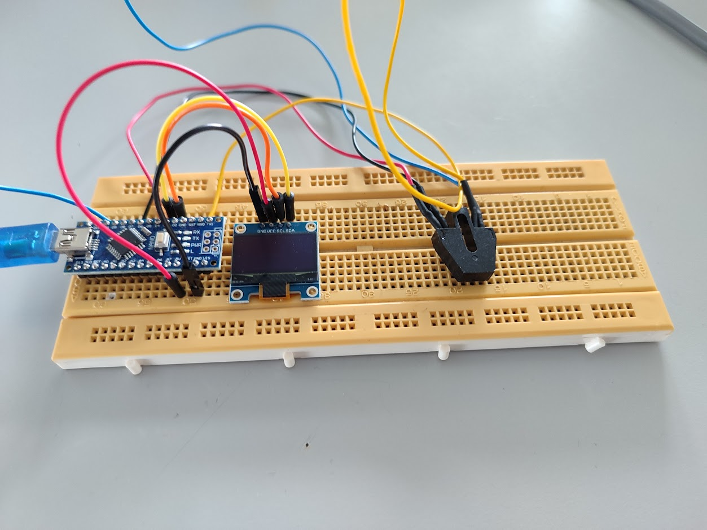
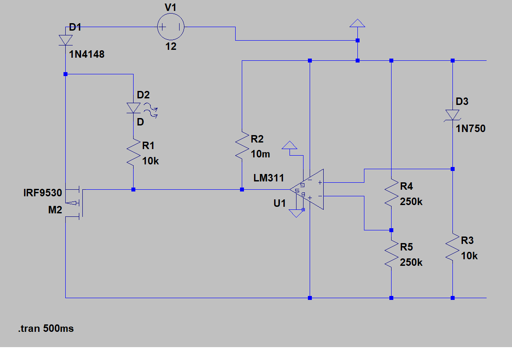
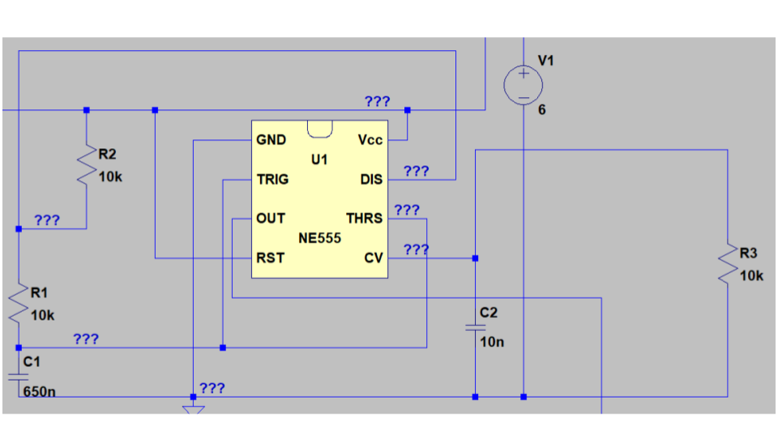
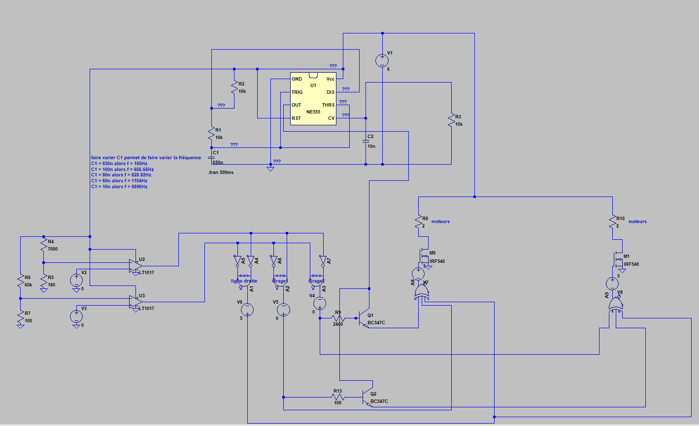
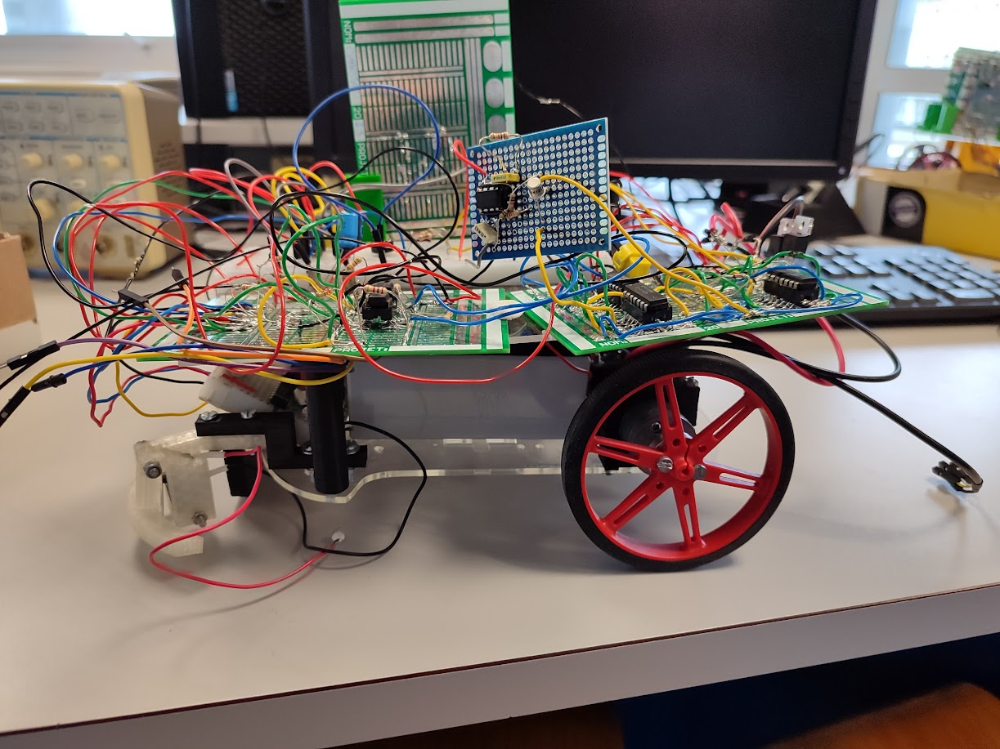

Le but de ce projet de fin d'année est de créer un robot suiveur de ligne sans utiliser de microcontrôleur. Pour cela, nous devons concevoir la partie électronique et intelligente du robot pour qu'il puisse suivre une ligne tracée au sol. Nous avons donc dû créer l'ensemble du système électrique du robot, en incluant la protection de la batterie, la génération d'un signal PWM pour contrôler la vitesse des moteurs,la détection de la ligne à l'aide de photodiodes, etc...
| Tâche à réaliser | Ressources utilisées | Traces | Autoévaluation |
|---|---|---|---|
| Vérifier le matériel L'objectif de cette tâche est de vérifier que tout le matériel nécessaire à la réalisation du robot suiveur de ligne est présent et fonctionnel, tel que les moteurs, les capteurs de ligne, les boutons fin de course et la batterie. Cette étape permet d'éviter les retards et les problèmes ultérieurs dans la réalisation du projet. |
Pédagogique : Cours de M.Lucas
Logiciel : LTSpice Matériels : carte pont en H, alimentation stabilisée, câbles(banane-banane/BNC-banane/BNC), oscilloscope, carte moteur |
Non renseignée | 10/10
Vérifier le matériel ne m'a pas poser de problème étant donné que nous avons appris à le faire durant le premier semestre. |
| Planifier les fonctions et les tâches à réaliser L'objectif de cette tâche est de définir les fonctions et les tâches à réaliser pour la création du robot suiveur de ligne, de les organiser et de les planifier dans un Gantt. Cela permettra une gestion efficace du temps et des ressources pour la réalisation du projet. |
Pédagogique : Cours de M.Hintzy
Logiciel : GanttProject |
Non renseignée | 6/10
Planifier les tâches fut plus compliquer, nous n'avons pas réussi à correctement le faire au début du projet ce qui m'a poser des problèmes dans la suite du projet. Cependant, nous avons réussi à le réaliser une fois le projet lancé et ça nous a beaucoup aider. |
| Calibrer les moteurs entre eux pour qu'ils tournent à la même vitesse L'objectif de cette tâche est de régler les moteurs du robot suiveur de ligne pour qu'ils tournent à la même vitesse. Cela permettra au robot de suivre la ligne de manière plus précise et régulière. |
Documentation : SAE Vérifier carte moteur
Matériels : carte pont en H, alimentation stabilisée, câbles(banane-banane/BNC-banane/BNC), oscilloscope, carte moteur |
 |
10/10
Calibrer les moteurs entre eux ne m'a poser aucun problème, car ils tournaient à la même vitesse dès le début, nous avons uniquement vérifié et non manipuler sur cette tâche. |
| Faire fonctionner et traiter les boutons fin de course L'objectif de cette tâche est de configurer et de tester les boutons fin de course du robot suiveur de ligne pour qu'ils arrêtent le robot lorsqu'ils sont activés. Cela permettra d'éviter les collisions et les dommages au robot. |
Pédagogique : Cours de Mme Afef
Matériels : Alimentation stabilisée, câbles(banane-banane/BNC-banane/BNC), oscilloscope, bascule D, portes logiques, relais |
 |
10/10
Ayant déjà réalisé un traitement des boutons fins de course dans le passé, cette partie ne m'a posé aucun problème technique. |
| Faire fonctionner et traiter les photodiodes L'objectif de cette tâche est de faire fonctionner et de régler les photodiodes du robot suiveur de ligne pour qu'elles détectent correctement la ligne à suivre. |
Pédagogique :Cours de M.Lucas
Matériels : Alimentation stabilisée, câbles(banane-banane/BNC-banane/BNC), oscilloscope, arduino nano, écran LCD, OPB 704 |
 |
10/10
Pour faire fonctionner les OPB704, j'ai utilisé mes compétences en arduino et ça ne m'a pas poser de problème particulier. |
| Faire un système de protection de la batterie L'objectif de cette tâche est de concevoir et de mettre en place un système de protection pour la batterie du robot suiveur de ligne, afin d'éviter les dommages causés par une décharge ou une charge excessive. |
Documentation : Schéma de M,Lucas
Logiciel : LTSpice |
 |
8/10
La protection de la batterie fut compliquée à comprendre au début, mais j'ai réussi à la réaliser sans trop de problèmes. |
| Créer un générateur PWM L'objectif de cette tâche est de créer un générateur de signal PWM pour contrôler la vitesse des moteurs du robot suiveur de ligne. Cela permet au robot de tourner lors des virages. |
Pédagogique : Cours de M.Arnaud
Logiciel : LTSpice |
 |
10/10
La création d'un générateur PWM ne fut pas compliquée à réaliser, car nous avions déjà étudié le schéma en cours précédemment. |
| Crée la fonction qui commande tout le robot L'objectif de cette tâche est de créer la fonction principale qui gère et coordonne toutes les autres fonctions et tâches du robot suiveur de ligne, afin qu'il puisse suivre la ligne de manière autonome. |
Pédagogique : Cours d'électronique et d'informatique
Logiciel : LTSpice |
 |
9/10
La fonction qui commande tout le robot fut très longue à réaliser, mais j'estime l'avoir bien réussi. |
| Monter et tester le robot L'objectif de cette tâche est de monter le robot suiveur de ligne en utilisant les composants et le matériel vérifiés précédemment, puis de tester son fonctionnement pour s'assurer qu'il suit la ligne correctement. |
Matériels : Robot |
 |
6/10
Malheureusement, le robot n’a pas réussi à fonctionner correctement sur la piste. Lors des tests réalisés fonction par fonction, en dehors de la piste, tous les modules répondaient comme prévu. Cependant, une fois placé sur la piste, le robot n’a pas été capable de tourner suffisamment pour effectuer un virage, ce qui a compromis sa progression. |
| ANALYSE PERSONNELLE | |||
| Pour conclure cette année scolaire, nous avons reçu un défi : celui de créer le robot suiveur de ligne le plus rapide de la promotion. Animé par un esprit de compétition, j'ai pris ce projet très à cœur et j'ai été ravi de pouvoir mettre en pratique toutes les connaissances acquises au cours de l'année en GEII.
Travailler sur ce robot a été une expérience très enrichissante pour moi. J'ai trouvé la motivation nécessaire pour réaliser chacune des différentes fonctions, ce qui nous a permis, avec mon groupe, de sélectionner les meilleures fonctions pour que notre robot soit le plus performant. Je tire un bilan très positif de cette SAE. Elle m'a permis de me dépasser sur le plan pratique, mais aussi de renforcer ma compréhension des montages en électronique. Étant habitué aux projets avec des microcontrôleurs, cette façon, de réaliser un projet était totalement nouvelle pour moi et j'ai pris beaucoup de plaisir à la découvrir. | |||